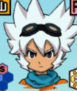
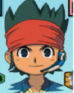

Jogadores importantes do IEGOS2013
🏆 TOP 5
- Saryuu Evan 🥇

Caracteristicas do jogador :
Perfil do jogador Saryuu Evan Saryuu Evan
- Atacante(Atualmente joga pelo KSX)
- Revelação/Estreia
- Passagens de times
- Double Drive RR(DDR) = LW2(2nd)/LGFT(2ºTemp)/FCTV2(Quartas)
Para mais informações sobre os numeros do jogador clique aqui
- Endou Kanon 🥈

Caracteristicas do jogador :